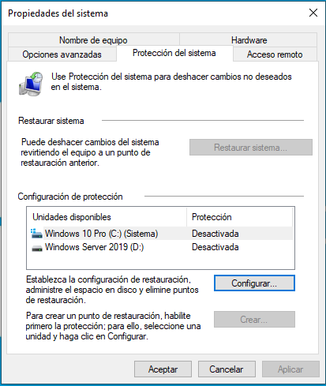
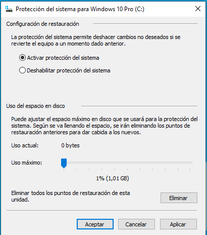
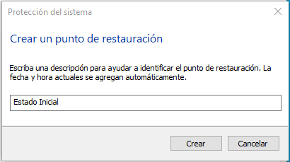
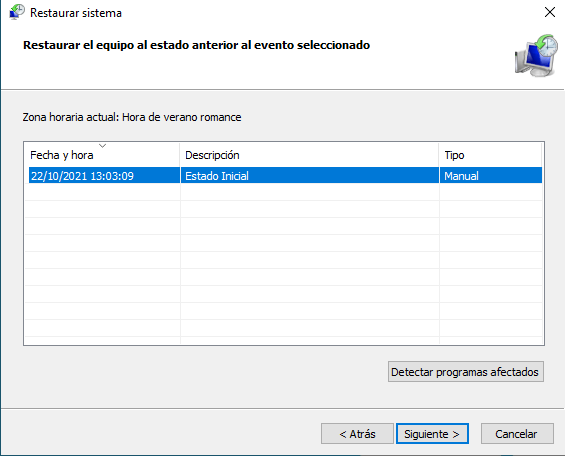

5.4. Integridad¶
La pérdida o deterioro de la información puede deberse a muchas causas distintas:
Amenaza |
Contramedida activa |
Contramedida pasiva |
|---|---|---|
Fallo de disco |
Monitorización.
Regleta/SAIs.
RAIDs.
|
Recuperación física
Copia de seguridad
|
Error humano |
? |
Recuperación lógica
Restauración
Copia de seguridad
|
Fallo de software |
Mantenimiento red eléctrica.
SAIs.
Journaling
Actualización del software.
|
Copia de seguridad |
Malware |
Software de detección |
|
Accidente |
Redundancia de servidores
Mantenimiento adecuado.
|
|
Desastre natural |
Ubicación adecuada.
Redundancia de servidores.
|
Algunas de estas medidas son propias de la seguridad física, de modo que se tratan en la unidad sobre «Entorno físico y acceso», y otras por estar relacionadas con el software se han dejado para la unidad de «Sistemas de escritorio». Finalmente, tampoco se incluyen aquí las relacionadas con la redundancia (Redundancia de discos y Servidor proxy), por lo que trataremos tres medidas bajo este epígrafe.
5.4.1. Monitorización de fallos¶
Ver también
Consulte la tecnología SMART.
5.4.2. Restauración¶
Cuando recuperamos datos podemos distinguir dos aspectos distintos:
La recuperación propiamente dicha de la información original sin recurrir a una copia. Esta acción se lleva a cabo cuando no se tomó ninguna prevención y, en consecuencia, no hay otra versión de los datos distinta a la que se ha perdido. Estas técnicas se analizarán en la unidad dedicada a «Sistemas de escritorio».
La restauración de la información desde una copia, bien a través de la estrategia de la copia de seguridad propiamente dicha (a la que dedicaremos integramente un epígrafe independiente) bien a través de guardar estados previos dentro del propio dispositivo. A esto último, reservamos el término restauración. La distinción es algo sutil y, en ocasiones, la diferencia entre una y otra estrategia muy difusa.
5.4.2.1. Restauración del sistema¶
- Windows
Windows 10 incluye una utilidad para crear manualmente puntos de restauración del sistema. Para ellar a ella basta con buscar Restauración:
En principio, la restauración hay que activarla a través del botón «Configurar»:
Al activarse la posibilidad, el botón «Crear» de la primera pantalla se habilitará y se podrá pinchar sobre él para crear un punto de restauración del sistema que devuelva el Windows al estado exacto en que se encuentra en el momento de hacer esta operación:
Una vez acabado el proceso ya se tendrá un punto de restauración, a cuyo estado se podrá regresar al pinchar sobre el botón «Restaurar sistema» de la ventana inicial:
- Linux
Para lograr el mismo efecto en los sistemas Linux, se puede optar por varias estrategias:
Usar un software específico que se encargue de hacer puntual o regularmente copias de lo archivos que constituyen el sistema. Por ejemplo, la aplicación timeshift (véase este artículo de introducción en softzone.es).
Nota
Estas aplicaciones, internamente, tendrán su propia estrategia para almacenar el estado previo de los archivos. La mencionada timeshift, por ejemplo, puede o usar rsync (lo cual en el fondo supone hacer copias de seguridad de los archivos de sistema) o hacer instantáneas si el sistema está montado sobre BTRFS.
Si hemos separado el sistema de los datos en partición aparte, realizar instantáneas de la partición del sistema, tal como se explica en el siguiente epígrafe sobre restauración de datos.
5.4.2.2. Restauración de datos¶
La restauración de datos permite la recuperación de una versión anterior del contenido de los archivos ante errores humanos como el borrado o la alteración accidentales. Básicamente consiste en mantener distintas versiones de los archivos en el propio soporte, ya que el almacenamiento de copias en soportes externos es más bien una copia de seguridad1.
- Windows
Por hacer
Para los sistemas Windows ver Shadow Copy.
- Linux
La restauración de datos en sistemas Linux se lleva a cabo mediante el uso de instantáneas, esto es, la preservación de uno o varios estados del sistema de archivos. Para ello debe disponerse de la capacidad de hacer instantáneas gracias a:
Usar un sistema de archivos que las soporte como BTRFS o ZFS. El sistema de archivos habitual en Linux, ext4, no las soporta.
Hacer instantáneas del volumen lógico de LVM sobre el que se encuentra el sistema de archivos lo que permite la restauración en sistemas de archivos sin soporte para ellas (como ext4).
Ver también
Consulte cómo hacer instantáneas del sistema de ficheros con LVM y en especial cómo hacerlas con snapper.
5.4.3. Copias de seguridad¶
Para este epígrafe de copias de seguridad conviene:
Estudiar los aspectos teóricos (tipos de copias, frecuencia, etc) incluidos en el apartado del manual sobre copias de seguridad.
Realizar copias de seguridad con algún software apropiado. El manual propone tar, rsync o BackupPC para centralizar las copias, pero puede optarse por otra solución más gráfica y sencilla. Lo interesante es que se pueda implementar una política de copias de seguridad (incremental, diferencial, etc.). Para Windows puede usarse EaseUS Todo Backup.
Realizar imágenes de respaldo (clonaciones) de sistemas completas. Puede usar para ello Clonezilla.
5.4.4. Ejercicios sobre integridad¶
Haciendo uso de tar:
Empaquetar sin comprimir el directorio personal del usuario guardando el paquete en
/tmp.Hacer lo mismo comprimiendo con xz.
Haga esto último, pero haciendo que en el paquete se guarde la ruta completa.
Desempaquetar el paquete generado en b) dentro de
/tmp/CopiaPersonal.
Haciendo uso de tar se quiere llevar a cabo una copia política de copias de seguridad sobre los datos (
/home), de manera que cada semana se haga una copia completa (el domingo) y cada día se lleven a cabo copias incrementales o diferenciales (lunes a sábado).Para realizar el ejercicio suponga que:
Hace la copia completa.
El lunes añade a
/home/usuarioel ficheronuevo.txt(póngale el contenido que quiera).El martes se añade otro fichero más al mismo directorio llamado
masnuevo.txt.El miércoles se añade otro fichero más (
masnuevotodavia.txt) y se modificanuevo.txt.El jueves se borra
masnuevo.txtTras ello, recupere en
/tmp/copia-homeel estado de/homeese jueves.
Sabido todo esto:
Haga el ejercicio suponiendo que la política es de copias incrementales.
Haga el ejercicio suponiendo que la política es de copias diferenciales.
El directorio
/home/sharetiene:Originariamente el siguiente contenido.
+-- ficheroA.txt (que contiene una letra a). +-- ficheroB.txt (que contiene una letra b). +-- mio +-- cuentas.txt (contiene el número 123). +-- amigos (que contiene "nadie me quiere").Pasado un día, ocurren los siguientes cambios:
Desaparece
ficheroB.txt.Se crea
ficheroC.txt(que contiene una letra «c»).Se altera
cuentas.txt(que pasa a contener el número «1234»).
Pasado otro día, ocurre esto:
Se altera
ficheroA.txt(que contiene dos aes).Se crea
ficheroD.txt(que contiene una «d»).Conozco a un nuevo amigo, así que borro la frase del archivo y añado su nombre «Pepito».
Y el cuarto día:
Desaparece
cuentas.txt.Añado otro amigo a la lista: «María».
Se pide:
Llevar a cabo una política de copias incrementales diaria. Ilustre cómo debe recuperar luego los datos.
Ídem pero mediante copias diferenciales.
Lleve a cabo una sincronización remota entre un directorio local y uno remoto:
En el disco local, el directorio de origen tiene el siguiente contenido:
+-- uno.txt +-- inmutable.txt | +-- dir +-- dos.txt
Sincronice con el directorio ~/copia del servidor remoto.
Modifique el directorio de origen:
+-- uno.txt (Cambie su contenido) +-- inmutable.txt | +-- dir +-- dos.txt <-- Bórrelo. +-- tres.txt
Vuelva a transferir de manera que se obtenga una copia exactamente igual al directorio de origen. ¿Qué ocurre con inmutable.txt?
En un servidor para copias de respaldo instale BackupPC. Suponga que sólo debería hacer copias de clientes linux:
Prepare y registre un cliente para copiar sus datos (
/home).Lleve a cabo la siguiente política de copias:
1 Copia completa cada 2 semanas (14 días).
1 Copia incremental cada día.
Mantenga 3 copias completas en el servidor.
Notas al pie
- 1
Ya hemos dicho, no obstante, que la diferencia es muy sútil porque el principio es el mismo: hacer copias.